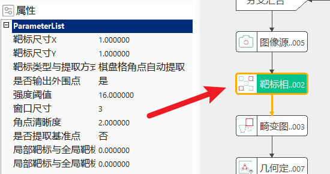
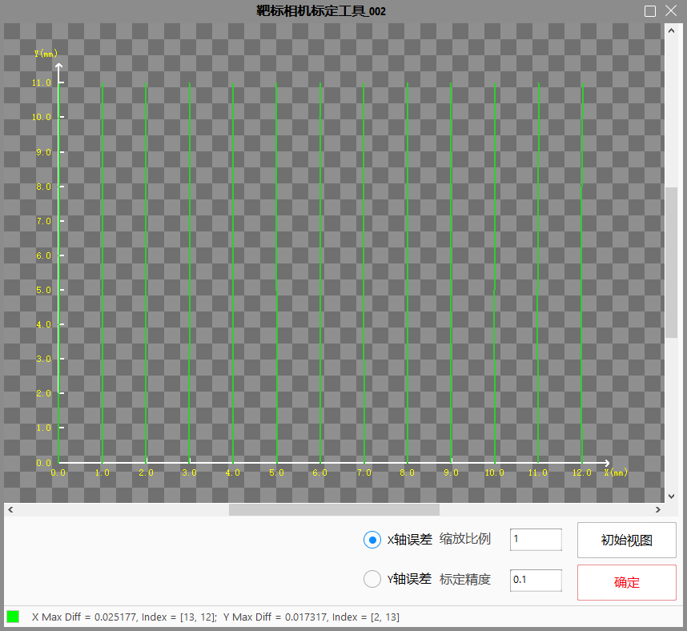
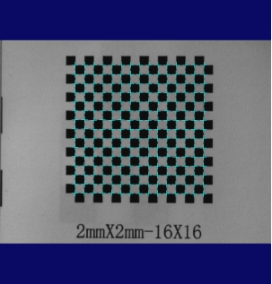
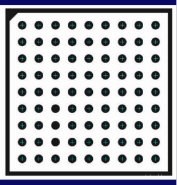
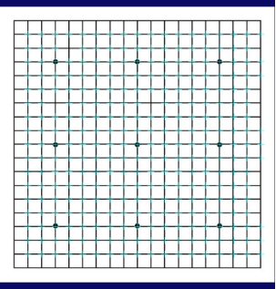
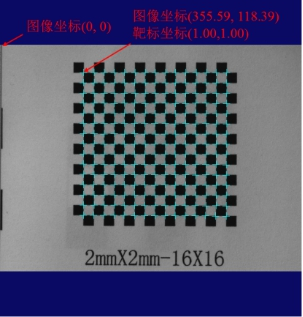

Công cụ hiệu chuẩn camera mục tiêu dùng để thực hiện hiệu chuẩn camera, tính toán các tham số nội và ngoại của camera. Kết quả hiệu chuẩn của công cụ có thể được dùng để hiệu chỉnh hình ảnh, nâng cao độ chính xác đo lường hoặc kiểm tra, thường kết hợp với công cụ hiệu chỉnh hình ảnh méo.
Công cụ hiệu chuẩn camera mục tiêu trước tiên dựa vào hình ảnh mục tiêu để xây dựng mô hình chiếu từ mặt phẳng không gian sang mặt phẳng hình ảnh, sau đó giải các tham số của mô hình này, từ đó xác định mối quan hệ ánh xạ giữa không gian vật lý thực và không gian pixel hình ảnh. Dựa vào ánh xạ này, chúng ta mới có thể thiết lập mối quan hệ đúng đắn giữa kích thước vật thể trên ảnh và kích thước thực, từ đó thực hiện đo lường trong không gian. Vì vậy, công cụ này có ý nghĩa quan trọng trong đo lường hình học 2D.
Quy trình thực hiện công cụ: Cấu hình đầu vào -> Thiết lập tham số trong thanh thuộc tính -> Thực hiện tính toán.
Tham số đầu vào là hình ảnh mục tiêu, liên kết một ảnh xám.


Giao diện thuộc tính nâng cao cho phép xem lỗi các điểm góc (lỗi giữa điểm thực và điểm lý tưởng). Hình trên hiển thị chế độ ban đầu; người dùng có thể chọn xem lỗi theo trục X hoặc trục Y. Tỷ lệ thu phóng cho phép nén hiển thị theo trục X hoặc Y. Độ chính xác hiệu chuẩn so sánh giá trị thực với giá trị lý tưởng; nếu vượt quá ngưỡng, điểm hiệu chuẩn sẽ hiển thị màu đỏ.
| Phân loại | Tên tham số | Mô tả tham số |
|---|---|---|
| Cửa sổ giám sát | Hình ảnh đầu ra | Kích thước và thông số pixel của hình ảnh mục tiêu đầu ra. |
| Kết quả hiệu chuẩn camera | Kết quả hiệu chuẩn camera, gồm các tham số mô hình hình ảnh, bao gồm tham số nội bộ, ngoại vi và tham số biến dạng của camera. | |
| Đơn vị pixel | Kết quả tính toán cho biết mỗi pixel tương ứng với kích thước vật lý thực tế, đơn vị mm/pixel. | |
| Điểm chuẩn | Nếu chọn "Có trích xuất điểm chuẩn", xuất tọa độ hình ảnh của các điểm chuẩn. | |
| Vị trí tương quan mục tiêu cục bộ – toàn cục | Vị trí tương quan giữa mục tiêu cục bộ và toàn cục theo hướng X và Y, giống với tham số trong cửa sổ thuộc tính. | |
| Tọa độ biến dạng của các góc hiệu quả | Tọa độ hình ảnh của các góc hiệu quả đã định vị trong hình ảnh mục tiêu. | |
| Tọa độ toàn cầu của các góc hiệu quả | Tọa độ các góc hiệu quả trong hệ tọa độ toàn cầu của mục tiêu. | |
| Tọa độ hình ảnh mục tiêu | Tập hợp các vector gồm tọa độ biến dạng hình ảnh và tọa độ toàn cầu của các góc hiệu quả, các góc tương ứng từng điểm một. | |
| Kết quả thực thi | Kết quả thực thi công cụ. | |
| Thời gian thực thi | Thời gian thực thi công cụ. | |
| Cửa sổ hình ảnh | Hình ảnh đầu ra | Hiển thị kết quả thực thi công cụ, giống thông số hình ảnh đầu ra trong cửa sổ giám sát. |
| Góc | Hiển thị tất cả các góc hiệu quả đã định vị. | |
| Điểm chuẩn | Nếu chọn trích xuất điểm chuẩn, hiển thị các điểm chuẩn đã trích xuất. | |
| Kết quả thực thi | Hiển thị kết quả thực thi, "OK" nếu thành công, "NG" nếu thất bại, giống cửa sổ giám sát. | |
| Dữ liệu liên kết | Kết quả hiệu chuẩn camera | Kết quả hiệu chuẩn camera mục tiêu, để sử dụng cho các công cụ tiếp theo, giống thông số trong cửa sổ giám sát. |
| Đơn vị pixel | Kết quả đơn vị pixel để sử dụng cho các công cụ tiếp theo, giống thông số trong cửa sổ giám sát. | |
| Vị trí tương quan mục tiêu cục bộ – toàn cục | Vị trí tương quan theo X, Y để sử dụng cho các công cụ tiếp theo, giống thông số trong cửa sổ giám sát. | |
| Tọa độ biến dạng của các góc hiệu quả | Xuất vector tọa độ hình ảnh các góc hiệu quả để sử dụng cho các công cụ tiếp theo, giống thông số trong cửa sổ giám sát. | |
| Tọa độ toàn cầu của các góc hiệu quả | Xuất vector tọa độ các góc hiệu quả trong hệ tọa độ toàn cầu để sử dụng cho các công cụ tiếp theo, giống thông số trong cửa sổ giám sát. | |
| Tọa độ hình ảnh mục tiêu | Xuất vector gồm tọa độ biến dạng hình ảnh và tọa độ toàn cầu của tất cả các góc hiệu quả, các góc tương ứng từng điểm một, để sử dụng cho các công cụ tiếp theo, giống thông số trong cửa sổ giám sát. |
Để xác định mối quan hệ giữa không gian vật lý thực tế và không gian pixel hình ảnh, camera sẽ chụp mục tiêu có mẫu cách đều cố định và sử dụng thuật toán hiệu chuẩn để tính toán, từ đó xác định mô hình hình học của camera. Nhờ đó, kích thước trong hình ảnh và kích thước thực tế của vật thể sẽ được liên kết chính xác, cho phép đo lường theo không gian thực. Các loại mục tiêu gồm trích xuất tự động góc bàn cờ, trích xuất tự động điểm đặc trưng của mục tiêu ma trận và trích xuất tự động điểm đặc trưng của mục tiêu tuyến tính, minh họa như Hình 1.



Tham số này phản ánh độ lệch của mục tiêu cục bộ so với mục tiêu toàn cục theo hướng X và Y. Ví dụ, khi vị trí tương quan = (0.00, 0.00), tọa độ góc trên bên trái = (0.00, 0.00); khi vị trí tương quan = (1.00, 1.00), tọa độ góc trên bên trái = (1.00, 1.00), lệch một đơn vị theo hướng dương X và Y trong hệ tọa độ mục tiêu toàn cục (các góc khác tương tự), minh họa trong Hình 2.

参见“\Samples\靶标相机标定工具.gvp”。